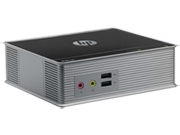
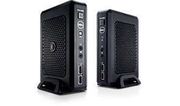
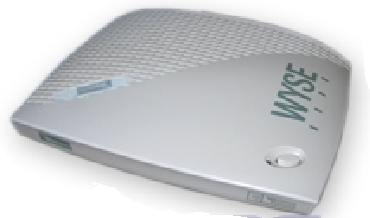

HP t610 Flexible Series Thin Clients deliver added security, broad expansion options and a PC-like multimedia experience for virtualized desktops. A flexible, two-form factor solution with one powerful boost in performance.
Content-creation capable
Available with Linux or Microsoft® WindowsTM Embedded Standard
Long lifecycles
Dual-monitor support(optional)
Low energy use: 11 watts (idle)
Rs.31450.65
AVAILABLE

VMware’s new best friend. Tailor made for VMware environments, the HP t310 Zero Client delivers amazing processing power with the latest PCoIP VMware technology. Gain a seamless desktop experience, even with extensive multimedia. Reduce costs and free up desk space, while increasing security. With no moving parts, reliability is part of its DNA.
Processor:TERA2321 PCoIP Zero Client
Memory, standard:512 MB DDR3 SDRAM
Flash memory:256 MB Flash
See multimedia, online videos and 3D applications running smoothing at native frame rates.
Boost security measures even more with the fiber network interface card (NIC).
Rs.31917.45
AVAILABLE

DELL OptiPlex FX130 Thin Client Give task- or application-based workers the streamlined performance they need to accomplish basic job functions with the compact, cost-efficient OptiPlex FX130.
Designed for basic tasks
Available with Linux
Long lifecycles
Centralized management
Dual-monitor support(optional)
Low energy use: 9 watts (idle)
Rs.21795.05
NOT AVAILABLE

The Winterm 1200LE is a high-performance yet low cost thin client from Wyse, the #1 supplier of thin computing solutions. This remarkable unit combines great performance, stateless operation, low power consumption, USB ports, remote management, and simple device setup and imaging.
integrated 10/100 Ethernet and wireless LAN connectivity
Server OS:
Citrix WinFrame, WinFrame, and Presentation Server
 SOFT TECH
SOFT TECH